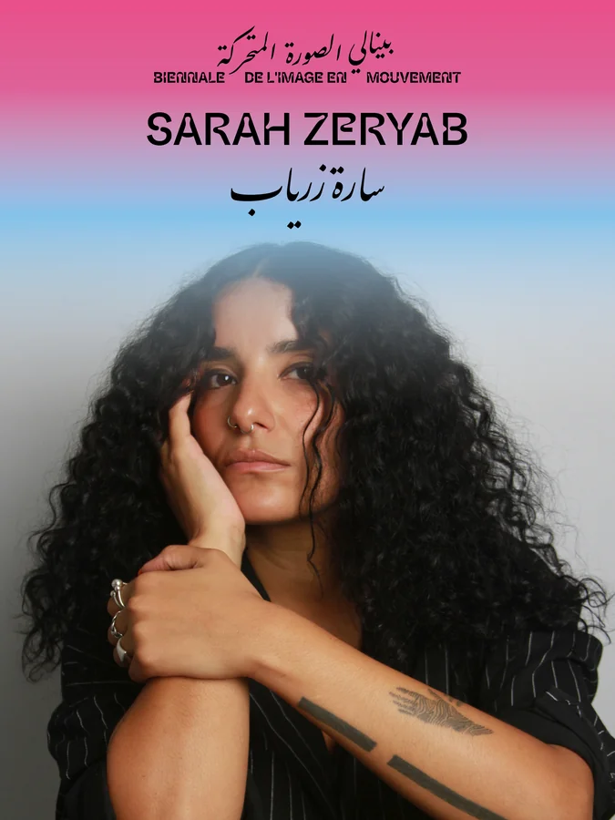
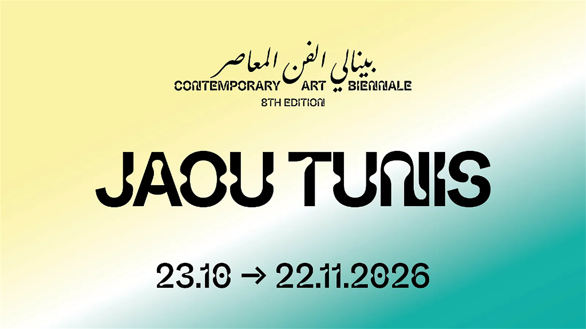
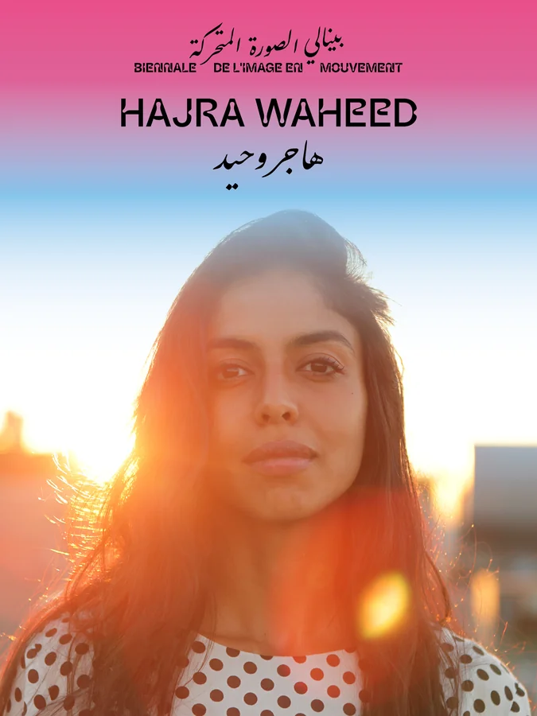
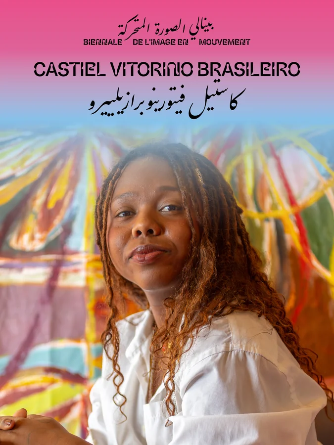
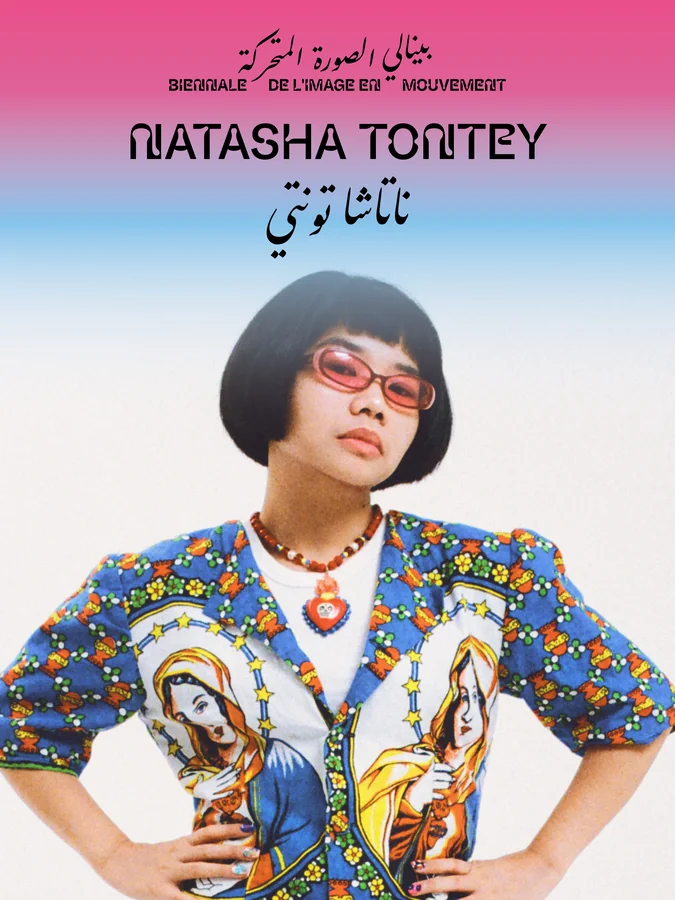
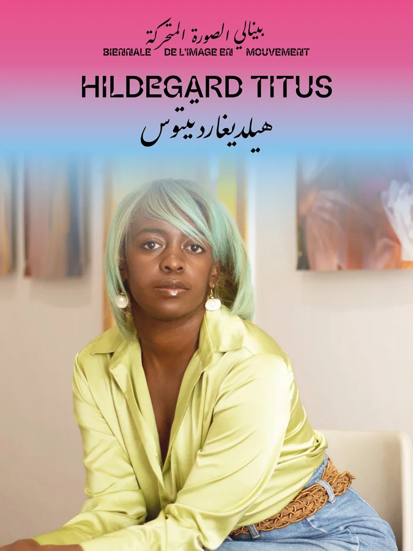
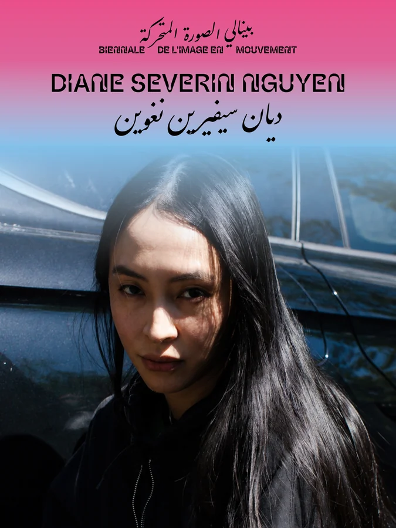
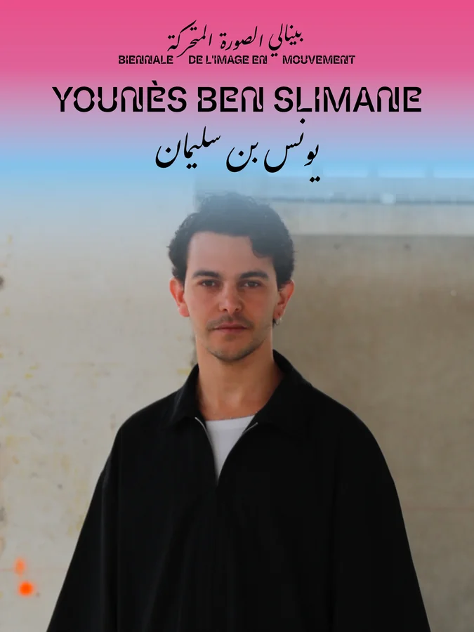
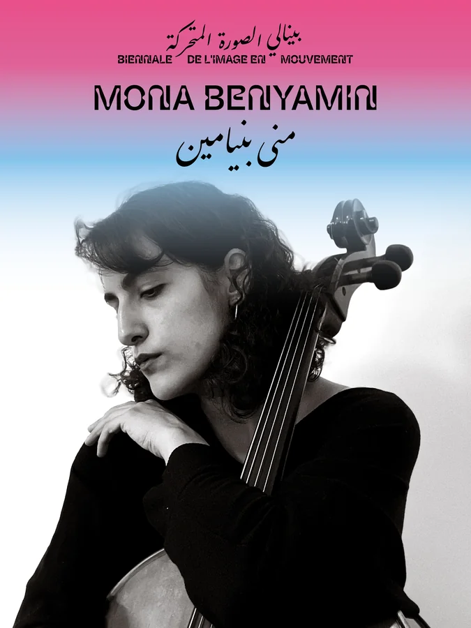

01
SARAH ZERYAB


This October, one of the world's leading biennials of the moving image crosses the Mediterranean.
For the first time in its history, the Biennale de l'Image en Mouvement leaves Geneva and arrives in Tunis, marking its first presentation on the African continent. At the same time, Art Explora's Mediterranean festival completes its journey by choosing Tunis as its final destination.
Organised by the Kamel Lazaar Foundation, in partnership with the Centre d'Art Contemporain Genève and the Art Explora Foundation, the eighth edition of Jaou Tunis unfolds across exhibitions,
performances, concerts, conversations and public programmes that bring artists, writers, musicians and
audiences together over the course of a month.
At its centre is Becoming the Ocean, a
major exhibition of BIM’26, bringing together sixteen newly commissioned artists from Africa, the Arab world,
Asia, Latin America and their diasporas.
Inspired by Khalil Gibran's image of a river that mistakes transformation for disappearance, the exhibition reflects on a world where inherited structures are increasingly unable to respond to the crises they have produced. Rather than asking how to preserve a world already slipping away, Becoming the Ocean asks what new forms of relation, memory and solidarity become possible when we recognise that survival depends not on separation, but on interdependence.
Presented within the nineteenth-century Caserne El Attarine in the Medina of Tunis, the exhibition is accompanied by collateral exhibitions, performances, concerts, Jaou Nights, workshops, a symposium and city-wide encounters that invite visitors to experience Tunis through art, conversation and hospitality.
Whether you are an artist, curator, collector, journalist, cultural practitioner or long-time friend ofc Jaou, we would be delighted to welcome you.
16 artistes et cinéastes internationaux réunis à Tunis pour la Biennale de l'Image en Mouvement 2026.







